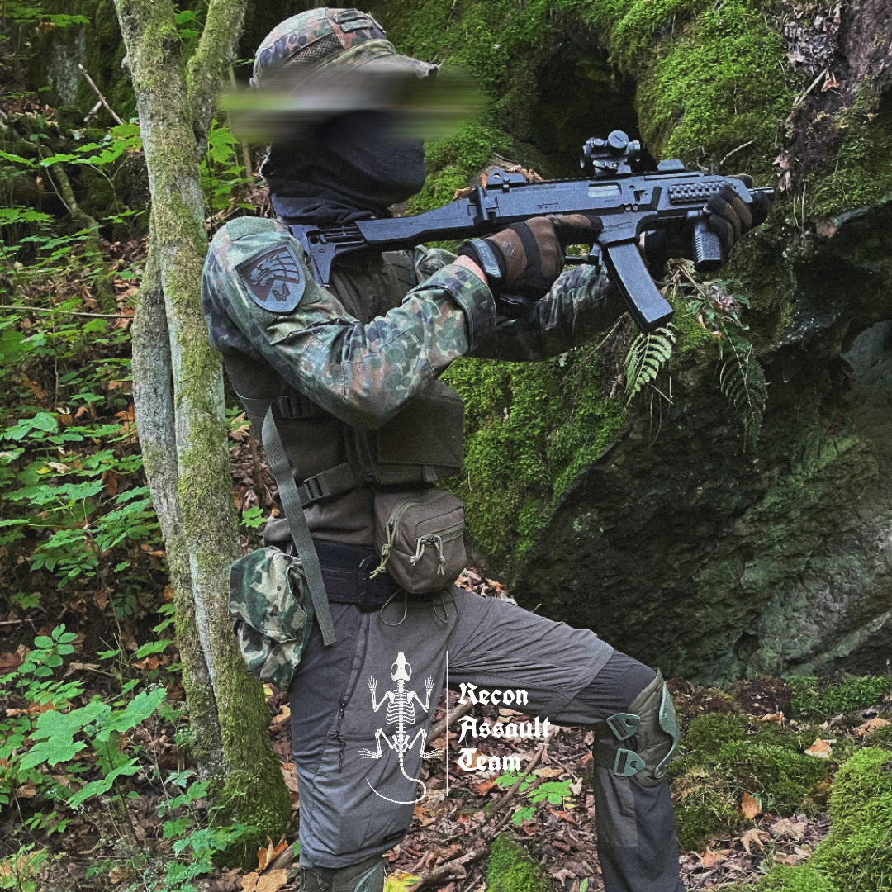
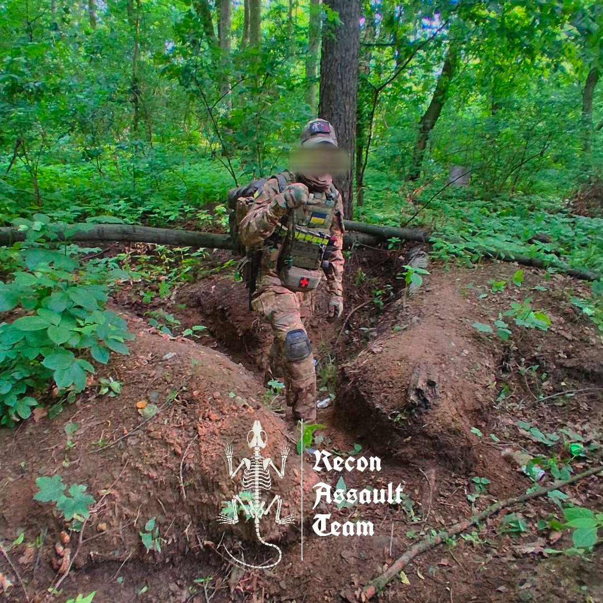

"Memento Mori"
About RAT PMC
RAT PMC is a Czech Republic–wide airsoft and milsim group
focused on small‑unit tactics and practical training.
Our goal is to develop reliable teamwork, field skills,
and readiness for challenging situations.
We train across different terrains and scenarios, combining airsoft with realistic LARPing elements.
The unit is structured into regional detachments, each focusing on the environment they train in most.
Scout Detachment
The Scout Detachment focuses on stealth, reconnaissance basics, and small‑team rifleman and movement tactics . Their training takes place mainly in the forests and hills of Prague West.

Assault Detachment
The Assault Detachment trains for direct‑action scenarios and close‑range engagements, with most of their activities centered around their own trench system in the Pardubice region.

Our Path
Founded in Prague, RAT PMC has expanded into a structured unit with specialized detachments across the Czech Republic
- June 2022 – 10.SOF Brigade (Scout Detachment) was created as a individual airsoft team
- July 2025 – RAT PMC founded by 10.SOF Brigade members and other like-minded people
- August 2025 – 10.SOF Brigade was integrated into RAT PMC and became the Scout Detachment
Join Us
Do you want to become part of RAT PMC? We are open to new members who share our passion for tactical airsoft and realistic training.
Apply Now